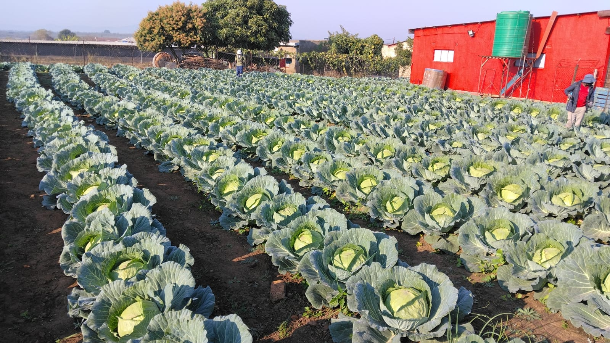
Cabbage
Healthy, field-grown cabbage cultivated and harvested with care.
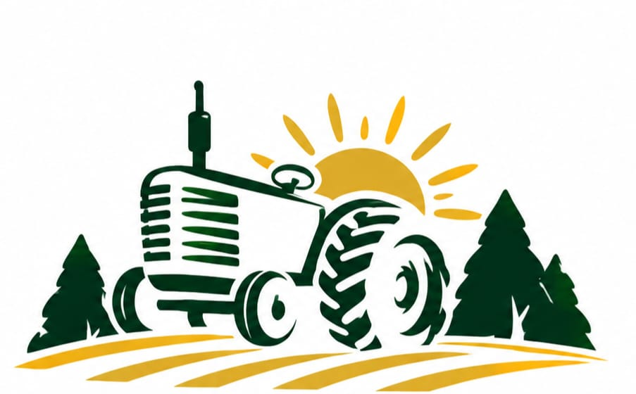
Masutha Farming feeding the nationGROWN IN LIMPOPO • SOUTH AFRICA
Masutha Farming (Pty) Ltd produces fresh vegetables with care, hard work and a commitment to feeding our communities.
OUR FARM
Masutha Farming (Pty) Ltd is an agricultural business based in Mamaila Kolobetona, Limpopo. Our work is centred on cultivating fresh vegetables and building a dependable local food supply.
From planting and field care to harvesting, our team works hands-on to produce healthy crops and serve our community.
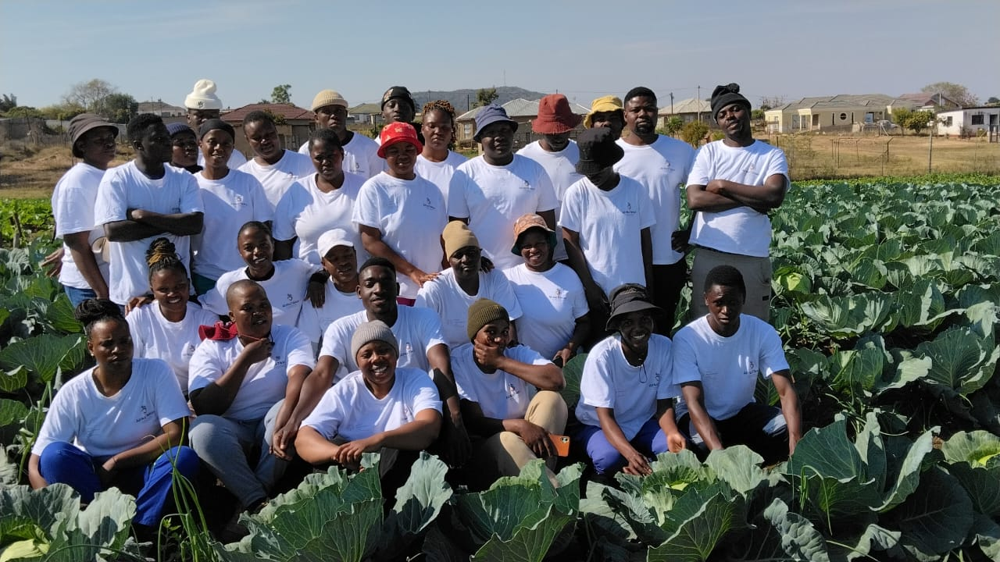
FROM OUR FIELDS
A look at crops currently featured across the Masutha Farming fields.

Healthy, field-grown cabbage cultivated and harvested with care.
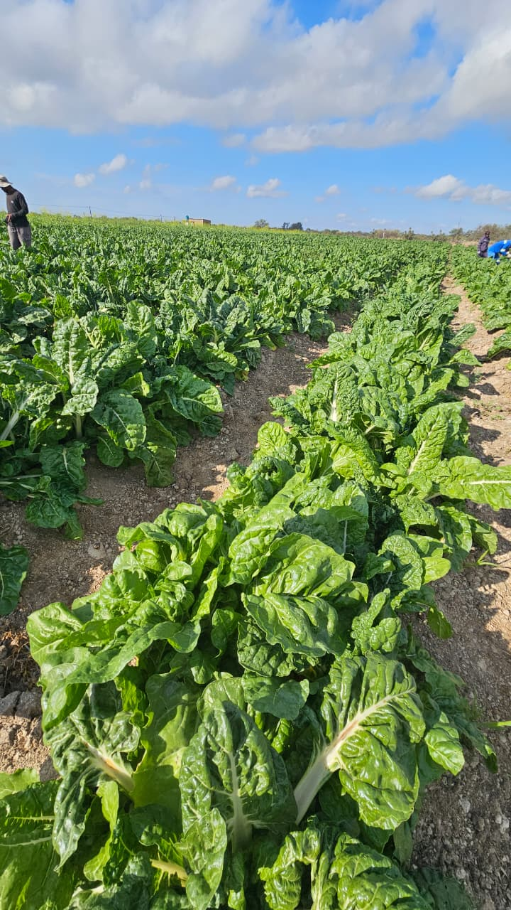
Fresh green crops grown in open fields under the Limpopo sun.
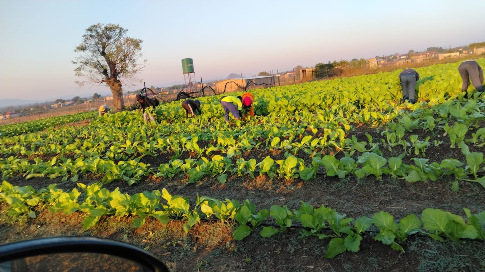
Seasonal vegetable production supported by hands-on field work.
IN THE FIELD
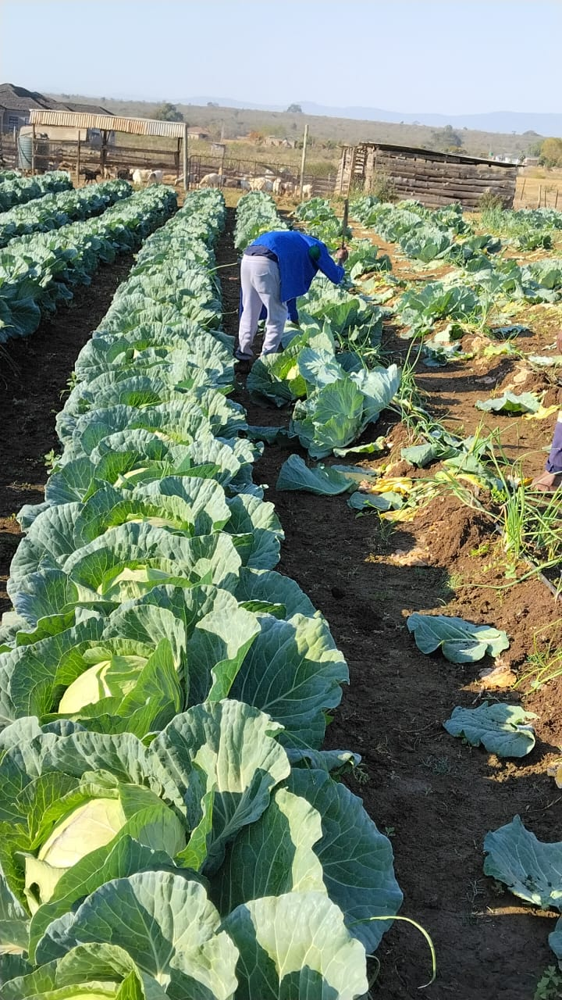
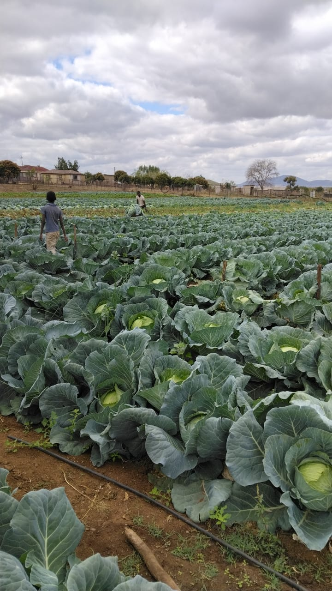
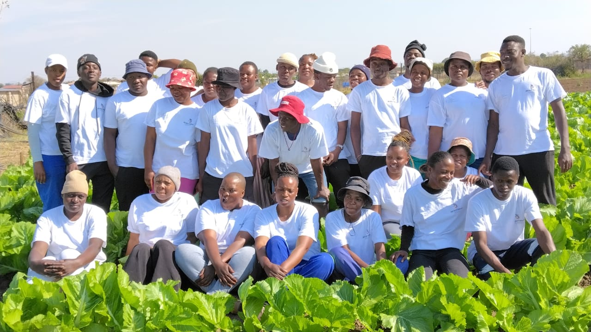
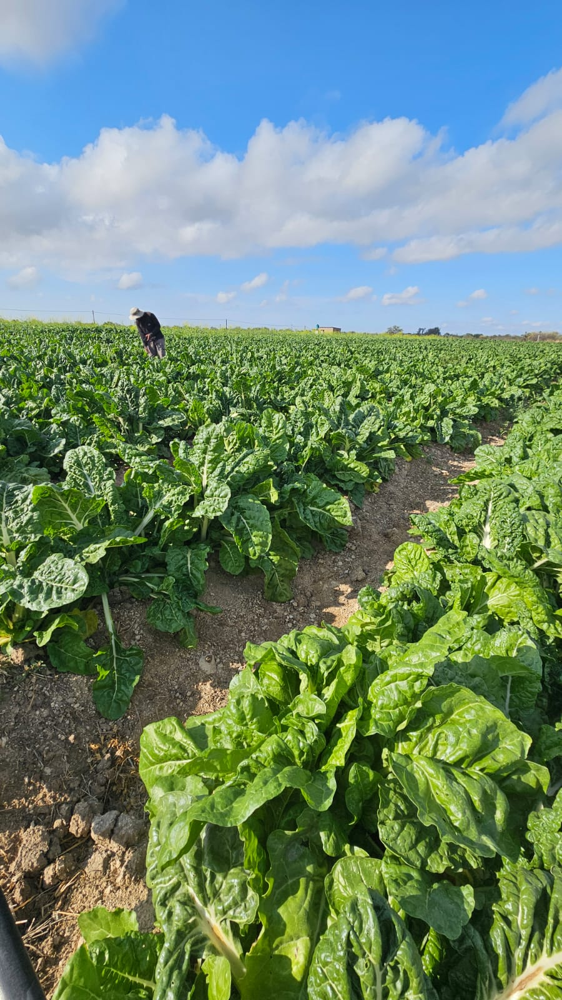
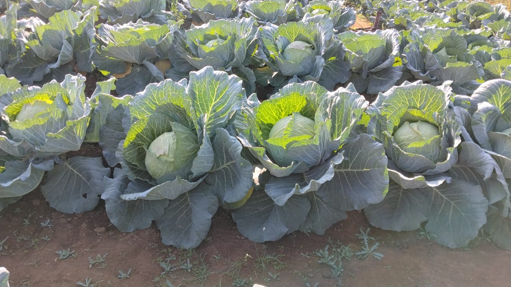
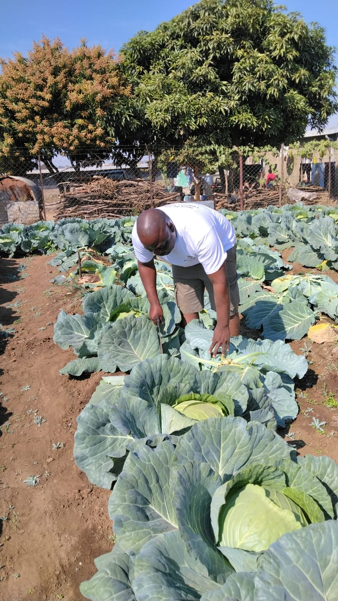
GET IN TOUCH
For produce enquiries, supply discussions or general information, contact the farm directly.
Farm Manager
Masutha Farming (Pty) Ltd
Reg. No. 2014/215590/07
Stand No. 06, Mamaila Kolobetona
Modjadjiskloof, Limpopo, 0835
South Africa